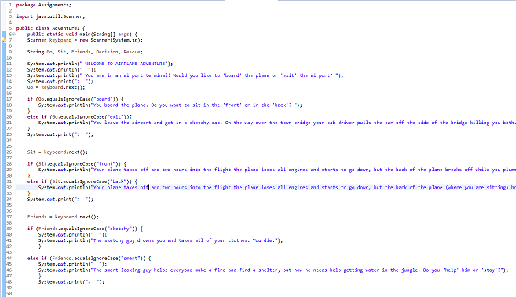

Choices Project
With this project we just learned how to use basics in java. The project goal was to create a story where the user determines the outcome of the story. So every path of the story would be decided by the user, for example would the person board the plane or would he leave the airport. This was difficult because you had to program each choice and each path in a program that I just learned. Through trial and error I figured it out and produced a pretty entertaining story.
